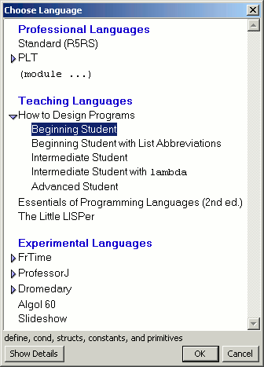

Beginners make mistakes, and need feedback customized to their level of understanding. The syntax of Scheme is so permissive that most Scheme implementations are notoriously bad at reporting errors in useful terms.
DrScheme overcomes this difficulty by providing a hierarchy of language levels. The hierarchy matches the natural introduction of Scheme in layers:
The Beginning Student language includes functions, structures and lists.
The Intermediate Student language adds lexical scoping constructs.
The Advanced Student language permits mutation and supports continuations.
The Scheme language level provides standard Scheme with or without graphics and debugging support.
These levels impose other syntactic and semantic restrictions based on common mistakes we have observed students make over the years. Each level tries to report errors in terms appropriate to that level.
|  |
DrScheme will start in the Beginning Student level, which is a severe restriction of the full Scheme language. If you (or your class) aren't using language levels, you should immediately switch DrScheme to Standard Scheme (or your instructor's suggested alternative) using the Choose Language menu item.
Consider a beginning student who is accustomed to infix syntax for
function application: f (x). This student may accidentally
slip into this notation while programming in Scheme, for example, in a
cond clause:
(define (length l) (cond [empty? (l) 0] [else (+ 1 (length (rest l)))]))
This definition is syntactically legal in conventional Scheme, and a traditional implementation would signal an error only when the function is invoked. Because the beginner doesn't know about first-class functions, the error message is incomprehensible.
DrScheme restricts the syntax of Beginning Student Scheme to a simple first-order language. By restricting the language, DrScheme can detect and flag beginner mistakes such as the one above. In this example it also highlights the offending clause, suggesting a natural revision to the beginner. In this example, DrScheme traps the use of a primitive operation without arguments:
In this example, DrScheme catches a lapse into infix notation by noticing that the conditional branch has too many sub-expressions: